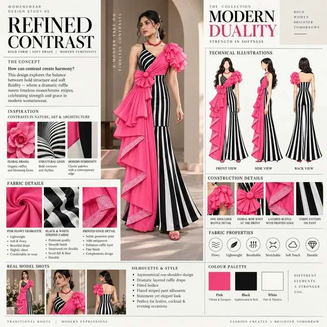
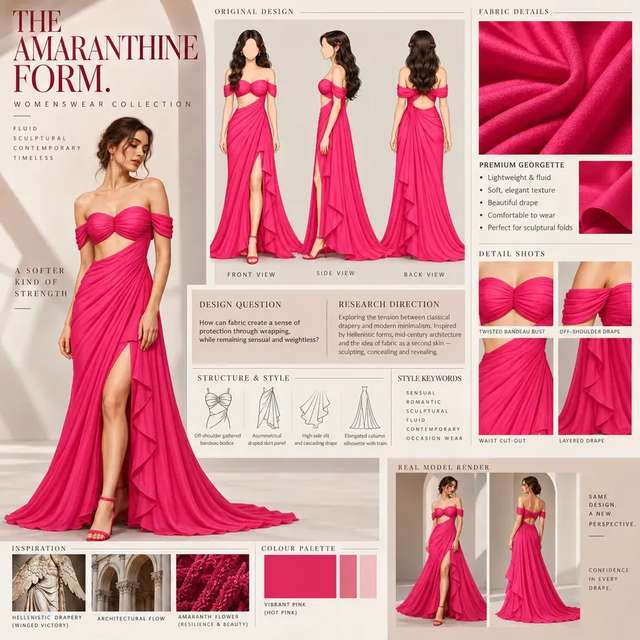
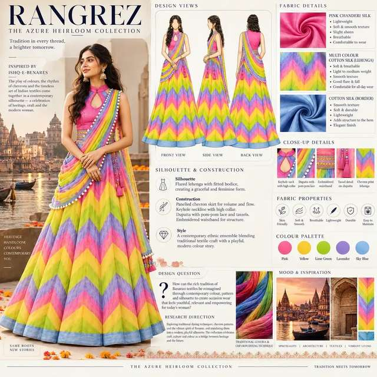
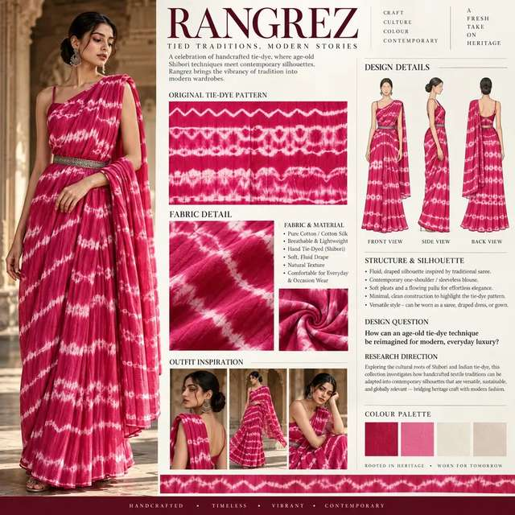
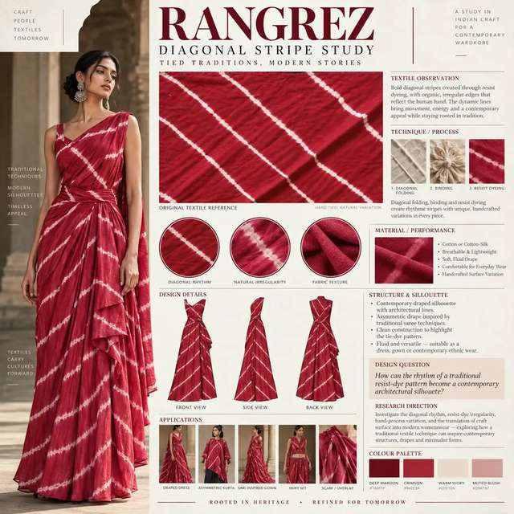

Womenswear Design Series

Seven directions. One study of form.
This series investigates how proportion, drape, layering and controlled openings can shift the character of womenswear. The goal is to build range while retaining a clear design sensibility.



Drape becomes a tool for movement.
Flowing and fitted relationships are tested alongside layered construction, gathered areas and statement sleeves. Each direction asks how fabric behaviour can define the silhouette.


Detail gives each silhouette its point of view.
Cut-outs, borders, gathered details and surface interventions are treated as decisions that support proportion and styling rather than as isolated embellishment.



A portfolio of possibilities.
The series demonstrates range across contemporary, occasion, evening and fusion directions while keeping the relationship between fabric, form and styling visible.